Soru 1Cevap: E
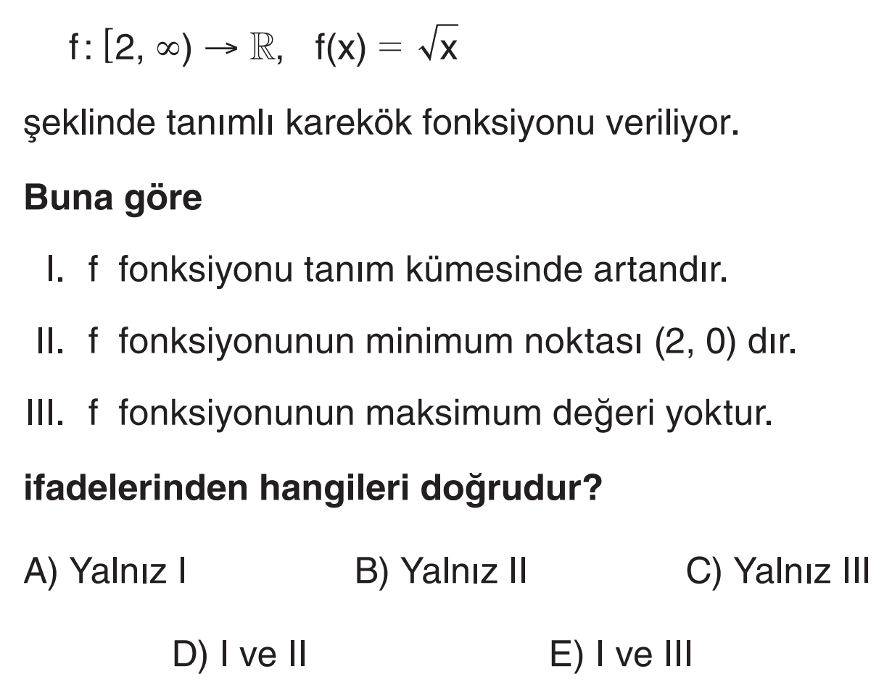
Çözüm
- $\sqrt x$ tanım kümesinde artandır (I doğru).
- En küçük değer $f(2)=\sqrt2$: minimum noktası $(2,\sqrt2)$, $(2,0)$ değil (II yanlış).
- Sağa doğru sınırsız artar: maksimum yok (III doğru). Cevap E.
Cevap: E
Soru 2Cevap: D
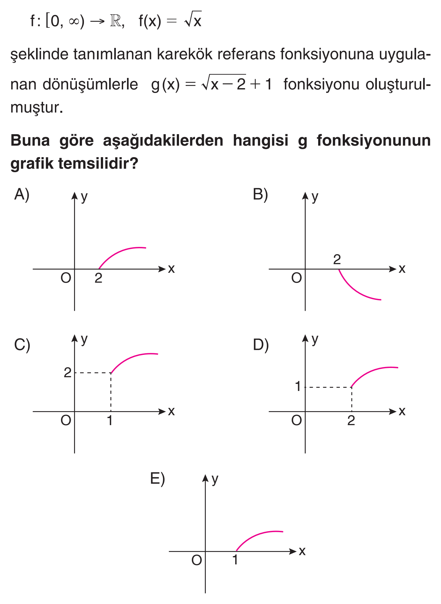
Çözüm
- $\sqrt{x-2}+1$: 2 birim sağa, 1 birim yukarı.
- Başlangıç noktası $(2,1)$.
- $(2,1)$'den başlayıp yükselen grafik D.
Cevap: D
Soru 3Cevap: E
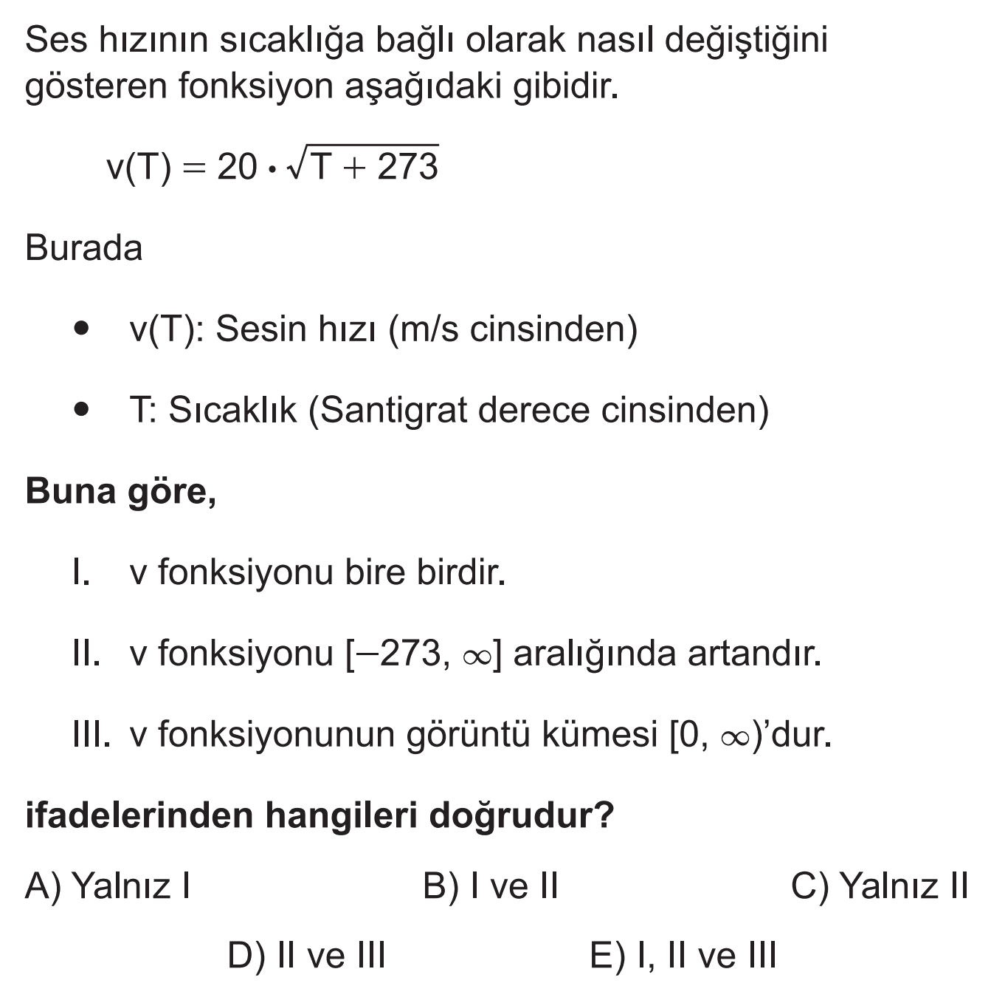
Çözüm
- $v(T)=20\sqrt{T+273}$, $\sqrt x$'in 273 birim sola ötelenip 20 katının alınmasıdır.
- Tanım kümesi $T\ge-273$; bu aralıkta sürekli artan, dolayısıyla bire bir (I, II).
- En küçük değer $v(-273)=0$, üst sınır yok: görüntü $[0,\infty)$ (III). Cevap E.
Cevap: E
Soru 4Cevap: C
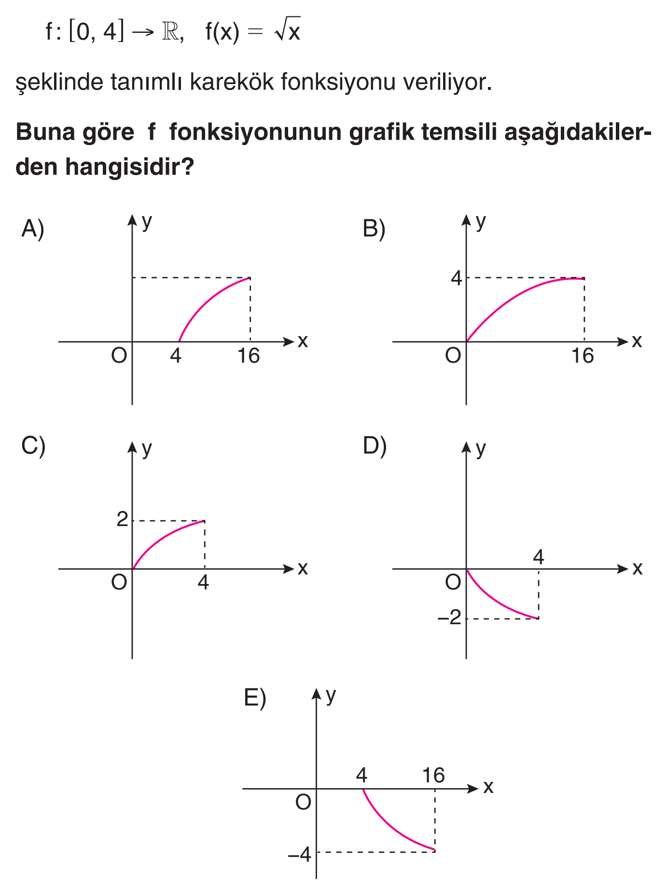
Çözüm
- $f(0)=0$, $f(4)=\sqrt4=2$.
- $[0,4]$'te $\sqrt x$ artan.
- $(0,0)$'dan $(4,2)$'ye yükselen grafik C.
Cevap: C
Soru 5Cevap: E
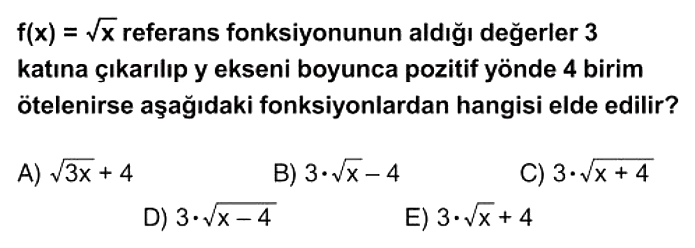
Çözüm
- Değerlerin 3 katı: $3\sqrt x$.
- 4 birim yukarı: $+4$.
- $3\sqrt x+4$ (E).
Cevap: E
Soru 6Cevap: C
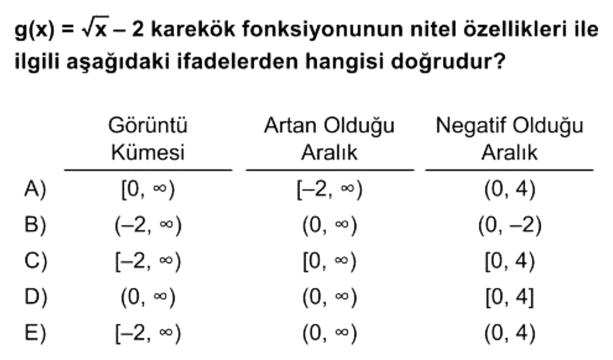
Çözüm
- $\sqrt x-2$: tanım $[0,\infty)$, $\sqrt x\ge0\Rightarrow g(x)\ge-2$; görüntü $[-2,\infty)$.
- $\sqrt x$ artan olduğundan $g$, $[0,\infty)$'da artan.
- $\sqrt x-2\lt0\Rightarrow0\le x\lt4$: negatif aralık $[0,4)$ (C).
Cevap: C
Soru 7Cevap: B
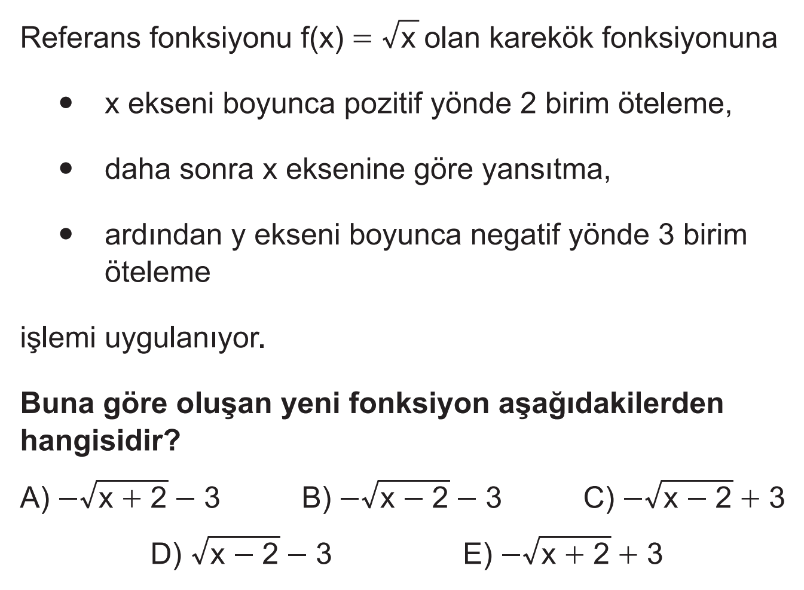
Çözüm
- 2 birim sağa: $\sqrt{x-2}$.
- $x$ eksenine göre yansıma: $-\sqrt{x-2}$.
- 3 birim aşağı: $-\sqrt{x-2}-3$ (B).
Cevap: B
Soru 8Cevap: C
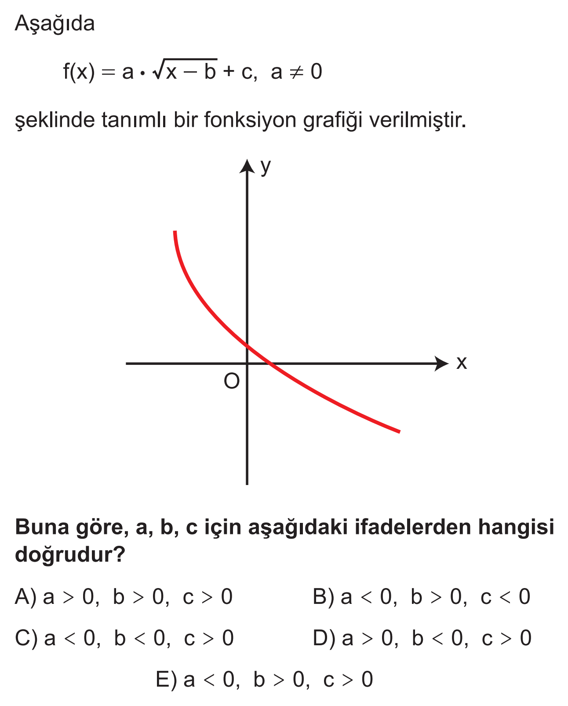
Çözüm
- Grafik soldaki başlangıç noktasından sağa doğru iniyor: $a\lt0$.
- Başlangıç noktası $(b,c)$, $y$ ekseninin solunda: $b\lt0$.
- Başlangıç noktası $x$ ekseninin üstünde: $c\gt0$. Cevap C.
Cevap: C
Soru 9Cevap: C
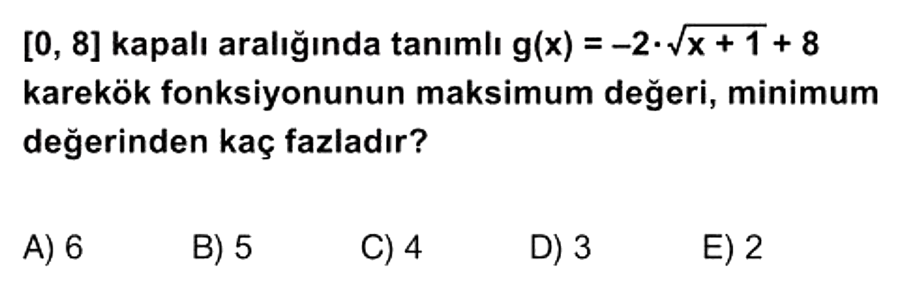
Çözüm
- $-2\sqrt{x+1}+8$ azalan: en büyük değer $x=0$'da, en küçük $x=8$'de.
- $g(0)=-2+8=6$, $g(8)=-6+8=2$.
- Fark $4$ (C).
Cevap: C
Soru 10Cevap: E
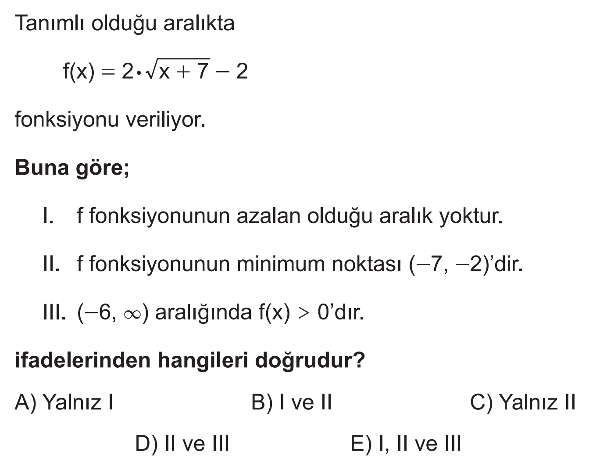
Çözüm
- $2\sqrt{x+7}-2$ tanım kümesinde artan: azalan aralığı yok (I).
- Başlangıç noktası $x=-7$'de: minimum noktası $(-7,-2)$ (II).
- $2\sqrt{x+7}-2\gt0\Rightarrow\sqrt{x+7}\gt1\Rightarrow x\gt-6$ (III). Cevap E.
Cevap: E
Soru 11Cevap: C
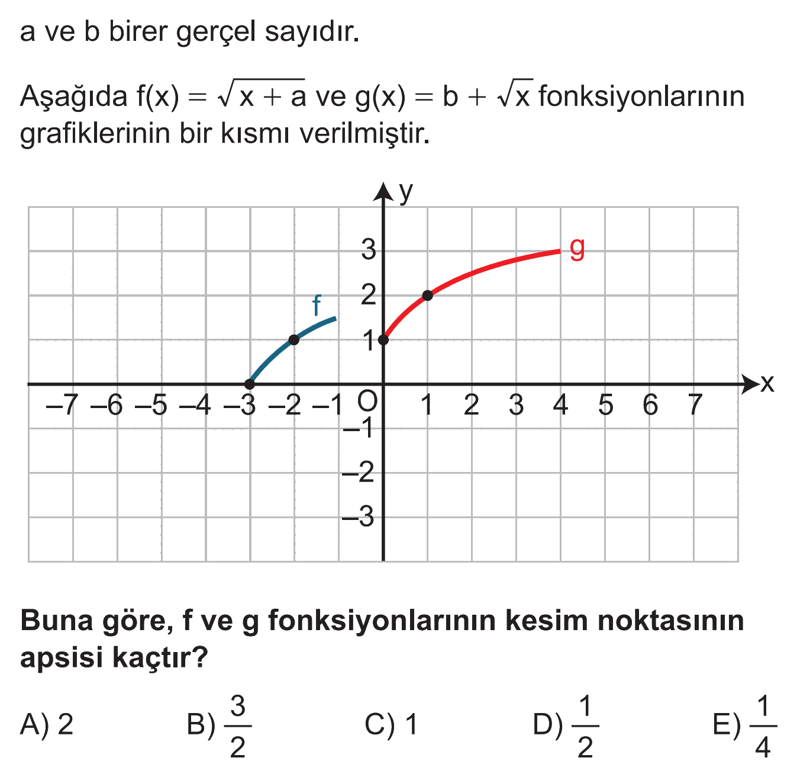
Çözüm
- $f$ grafiği $(-3,0)$'dan başlıyor: $\sqrt{x+a}$ için $a=3$. $g$ grafiği $(0,1)$'den başlıyor: $b=1$.
- $\sqrt{x+3}=1+\sqrt x\Rightarrow x+3=1+2\sqrt x+x$.
- $2\sqrt x=2\Rightarrow x=1$ (C).
Cevap: C
Soru 12Cevap: B
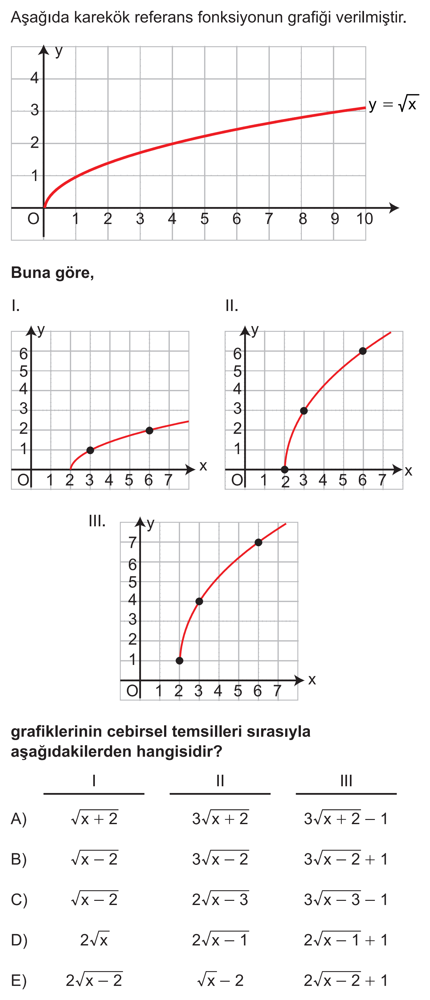
Çözüm
- I: $(2,0)$'dan başlıyor ve $(6,2)$'den geçiyor: $\sqrt{x-2}$.
- II: $(2,0)$'dan başlayıp $(3,3)$'ten geçiyor: $3\sqrt{x-2}$.
- III: $(2,1)$'den başlayıp $(3,4)$'ten geçiyor: $3\sqrt{x-2}+1$. Cevap B.
Cevap: B
Soru 13Cevap: E
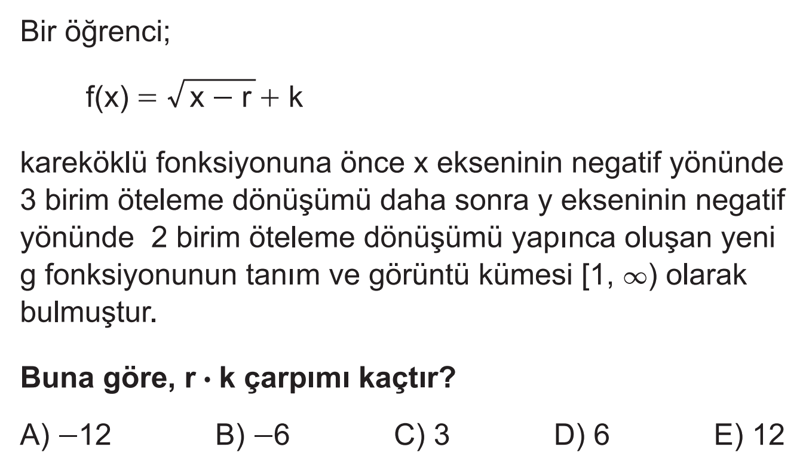
Çözüm
- 3 birim sola: $\sqrt{x+3-r}+k$; 2 birim aşağı: $g(x)=\sqrt{x-(r-3)}+k-2$.
- Tanım kümesi $[r-3,\infty)=[1,\infty)\Rightarrow r=4$.
- Görüntü $[k-2,\infty)=[1,\infty)\Rightarrow k=3$; $r\cdot k=12$ (E).
Cevap: E
Soru 14Cevap: D
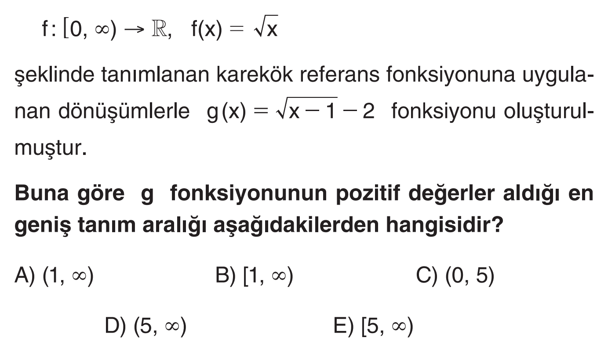
Çözüm
- $\sqrt{x-1}-2\gt0\Rightarrow\sqrt{x-1}\gt2$.
- $x-1\gt4\Rightarrow x\gt5$.
- En geniş aralık $(5,\infty)$ (D).
Cevap: D
Soru 15Cevap: A
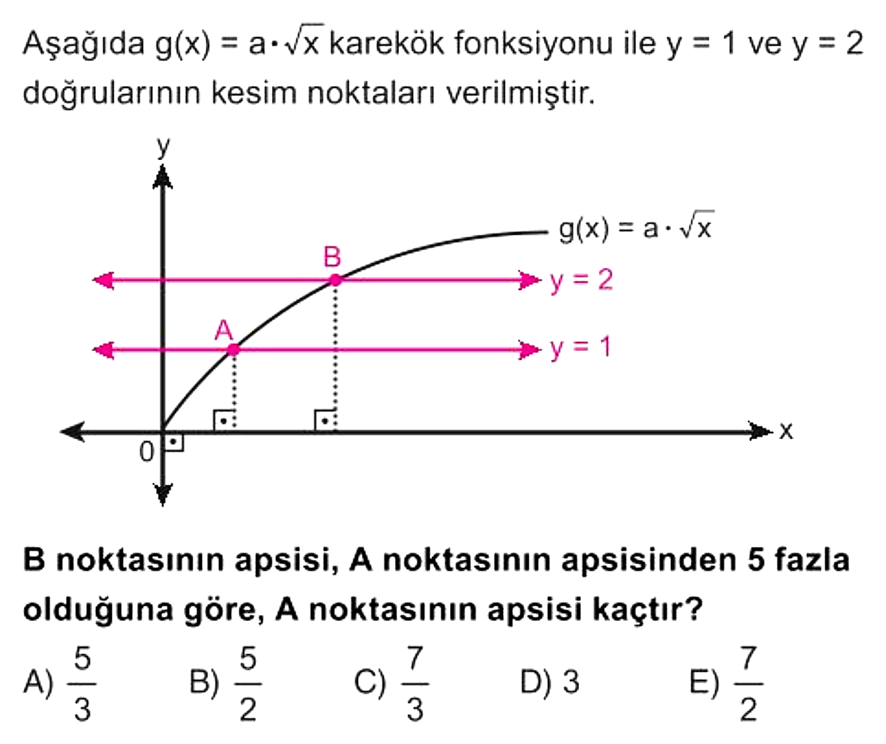
Çözüm
- $a\sqrt{x_A}=1\Rightarrow x_A=\dfrac1{a^2}$; $a\sqrt{x_B}=2\Rightarrow x_B=\dfrac4{a^2}$.
- $x_B-x_A=\dfrac3{a^2}=5\Rightarrow\dfrac1{a^2}=\dfrac53$.
- $x_A=\dfrac53$ (A).
Cevap: A
Soru 16Cevap: B
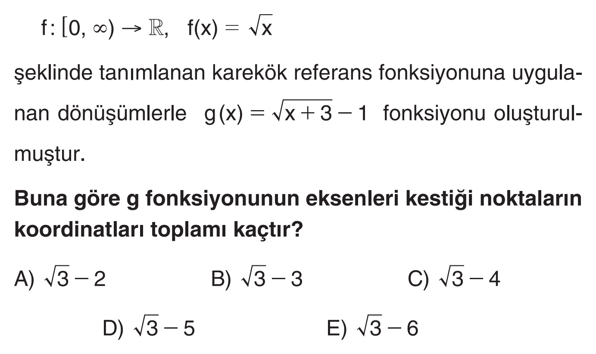
Çözüm
- $g(0)=\sqrt3-1$: $(0,\sqrt3-1)$.
- $\sqrt{x+3}=1\Rightarrow x=-2$: $(-2,0)$.
- Koordinatlar toplamı $\sqrt3-1-2=\sqrt3-3$ (B).
Cevap: B
Soru 17Cevap: E
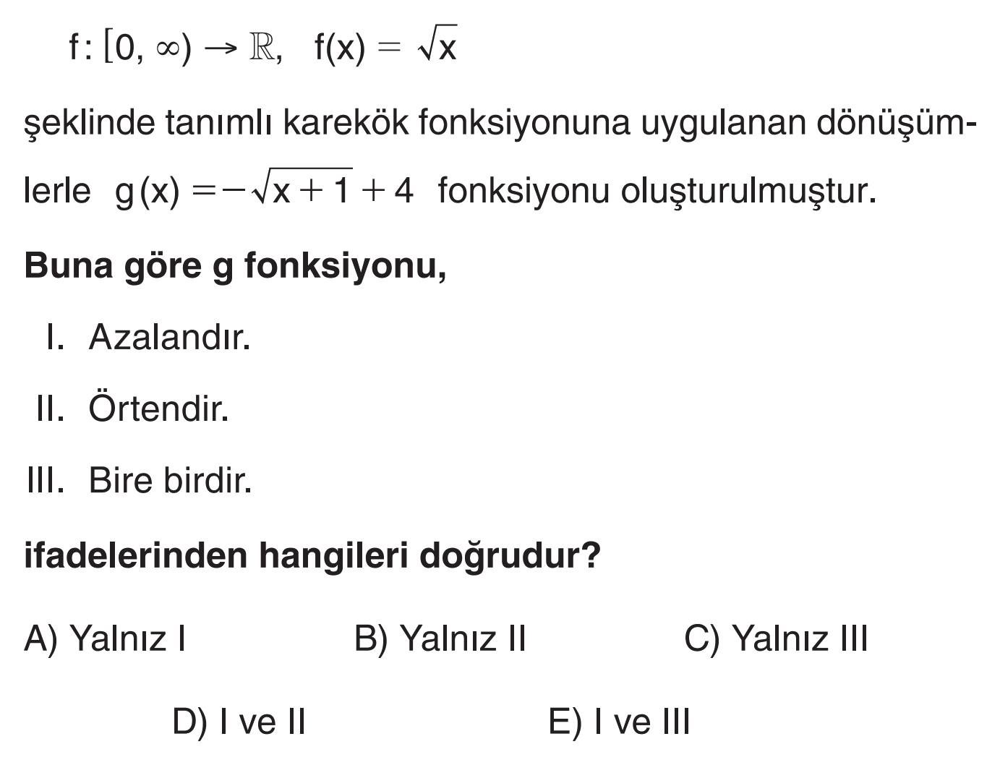
Çözüm
- $-\sqrt{x+1}+4$: baş katsayı negatif, azalan (I) ve bire bir (III).
- Görüntü $(-\infty,4]$, $\mathbb R$ değil: örten değil (II).
- Cevap: I ve III (E).
Cevap: E
Soru 18Cevap: B
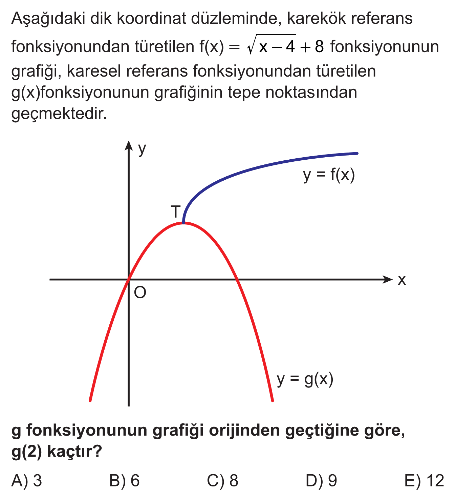
Çözüm
- $f(x)=\sqrt{x-4}+8$'in başlangıç noktası $T(4,8)$: $g$'nin tepe noktası.
- $g(x)=a(x-4)^2+8$, $g(0)=0\Rightarrow16a+8=0\Rightarrow a=-\dfrac12$.
- $g(2)=-\dfrac12\cdot4+8=6$ (B).
Cevap: B
Soru 19Cevap: C
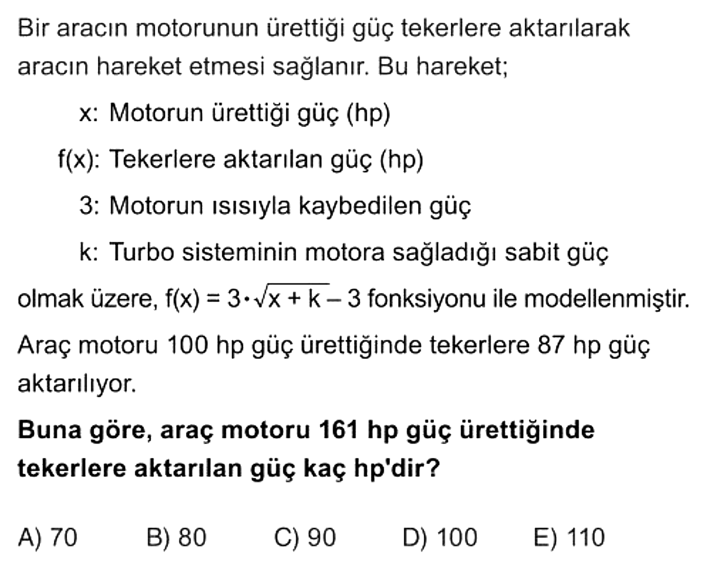
Çözüm
- $f(100)=3\sqrt{100+k}-3=87\Rightarrow\sqrt{100+k}=30\Rightarrow k=800$.
- $f(161)=3\sqrt{961}-3$.
- $=3\cdot31-3=90$ hp (C).
Cevap: C
Soru 20Cevap: C
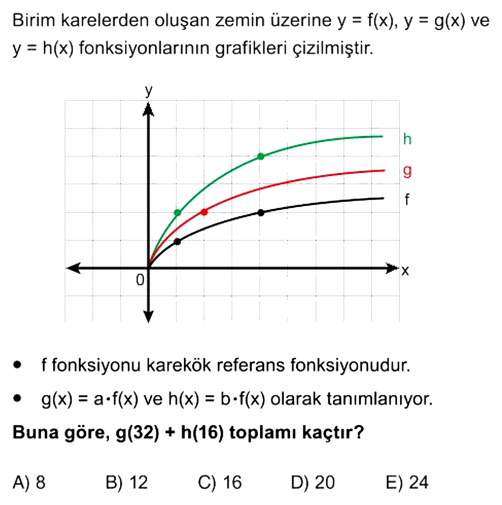
Çözüm
- Birim karelerden: $g(2)=2$, yani $a\sqrt2=2\Rightarrow a=\sqrt2$; $h(1)=2\Rightarrow b=2$.
- $g(32)=\sqrt2\cdot\sqrt{32}=8$.
- $h(16)=2\cdot4=8$; toplam $16$ (C).
Cevap: C
Soru 21Cevap: A
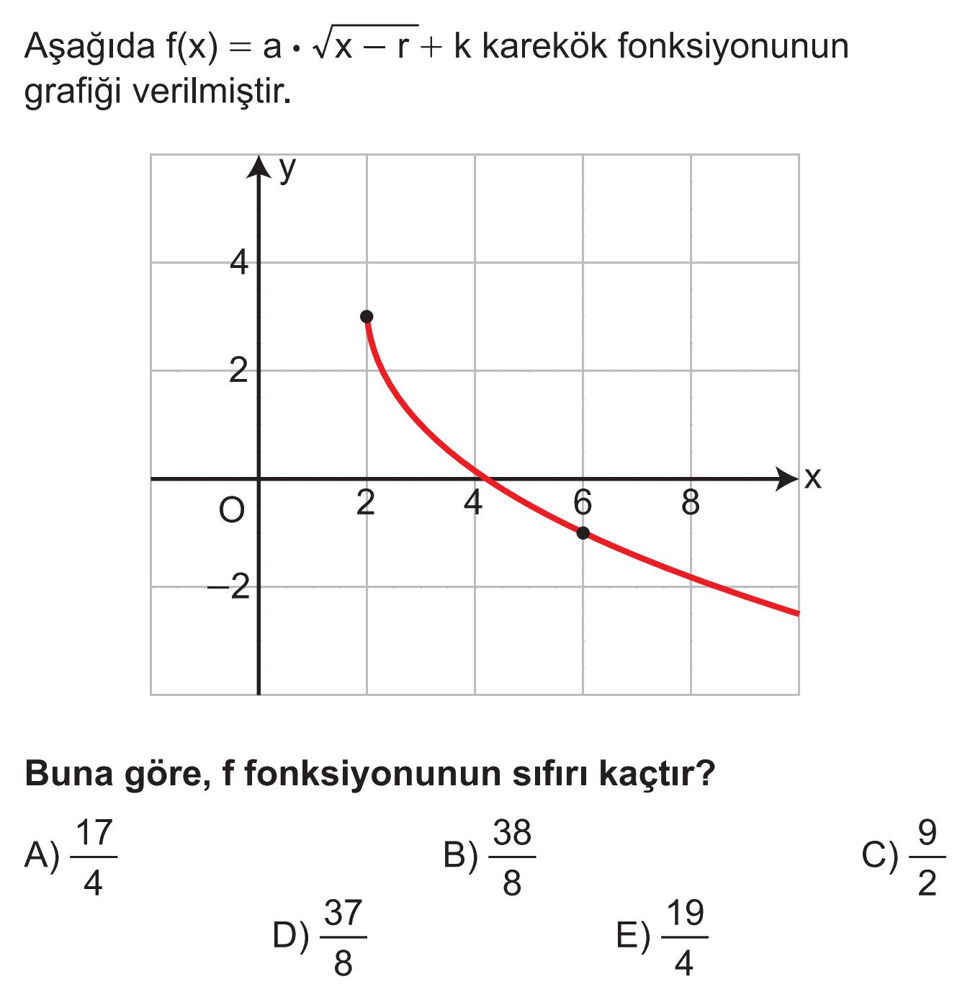
Çözüm
- Başlangıç noktası $(2,3)$: $r=2$, $k=3$.
- $(6,-1)$'den geçer: $a\sqrt4+3=-1\Rightarrow a=-2$.
- $-2\sqrt{x-2}+3=0\Rightarrow x-2=\dfrac94\Rightarrow x=\dfrac{17}4$ (A).
Cevap: A
Soru 22Cevap: D
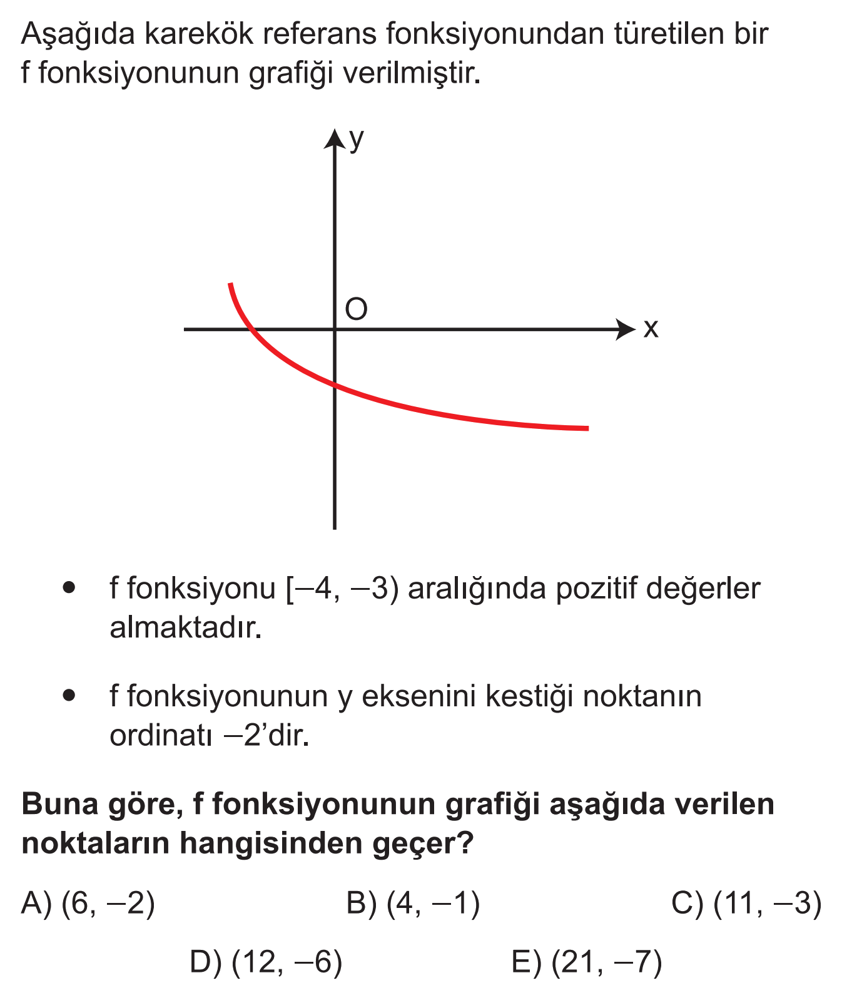
Çözüm
- Grafik $x=-4$'ten başlıyor: $f(x)=a\sqrt{x+4}+k$; $[-4,-3)$'te pozitif olduğundan $f(-3)=0$: $a+k=0$.
- $f(0)=-2\Rightarrow 2a+k=-2$; $a=-2$, $k=2$: $f(x)=-2\sqrt{x+4}+2$.
- $f(12)=-2\cdot4+2=-6$: grafik $(12,-6)$'dan geçer (D).
Cevap: D
Soru 23Cevap: E
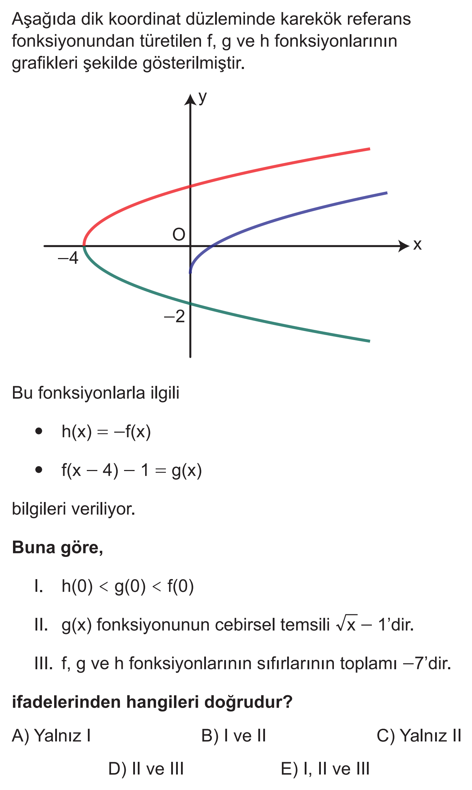
Çözüm
- Kırmızı $f(x)=\sqrt{x+4}$; $h=-f$ yeşil, $g(x)=f(x-4)-1=\sqrt x-1$ mavi (II doğru).
- $h(0)=-2$, $g(0)=-1$, $f(0)=2$: $h(0)\lt g(0)\lt f(0)$ (I doğru).
- Sıfırlar: $f$ ve $h$ için $-4$, $g$ için $1$; toplam $-7$ (III doğru). Cevap E.
Cevap: E
Soru 24Cevap: C
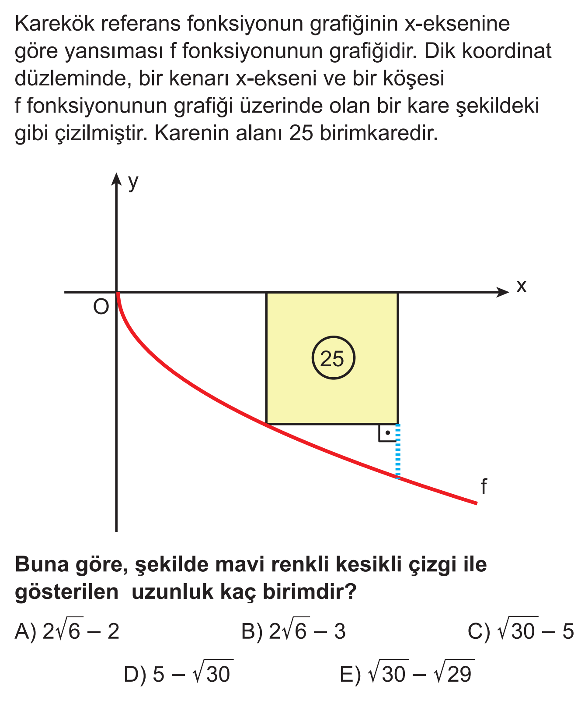
Çözüm
- $f(x)=-\sqrt x$. Karenin kenarı $5$; sol alt köşesi $(c,-5)$ grafiğin üzerinde: $\sqrt c=5\Rightarrow c=25$.
- Karenin sağ kenarı $x=30$'da; $f(30)=-\sqrt{30}$.
- Mavi uzunluk $\sqrt{30}-5$ (C).
Cevap: C